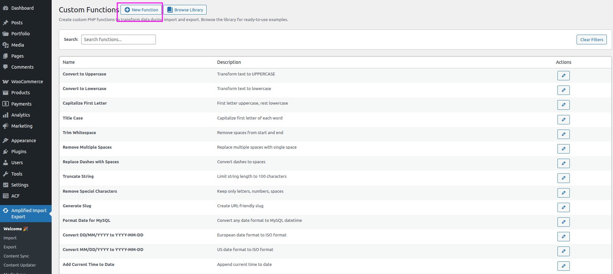
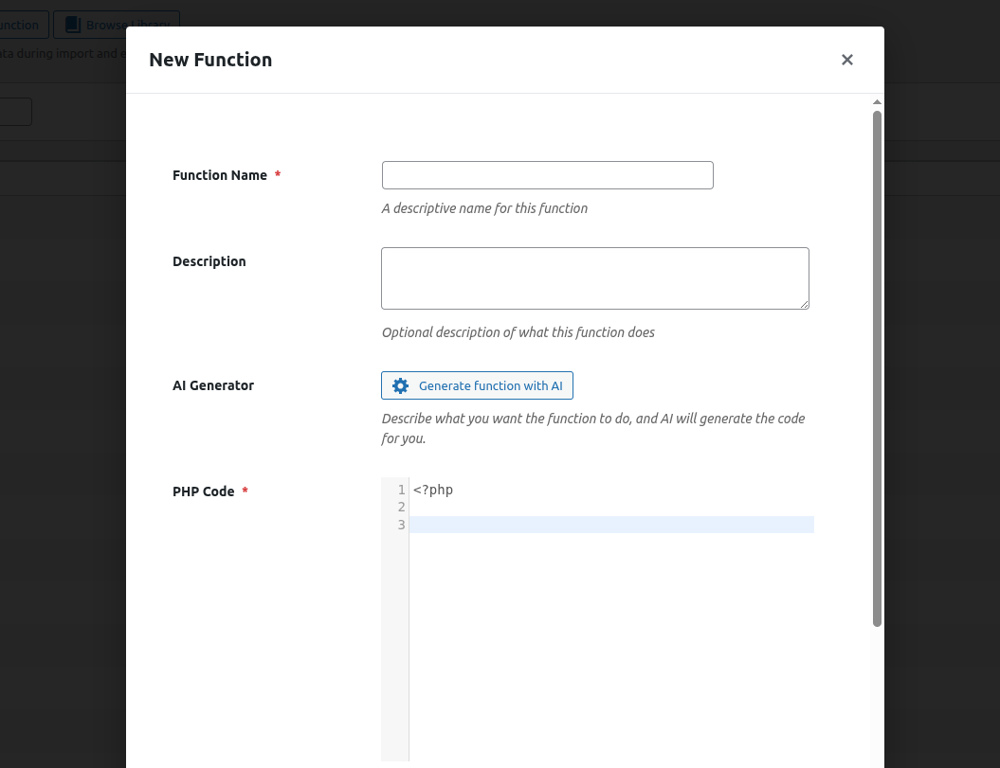
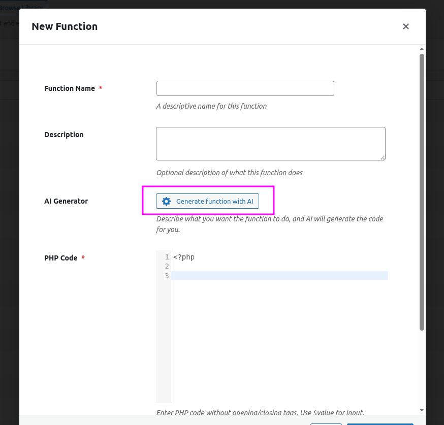
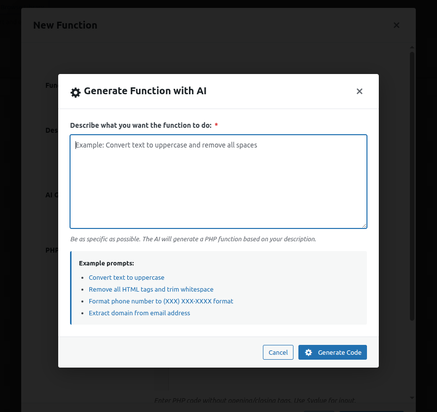
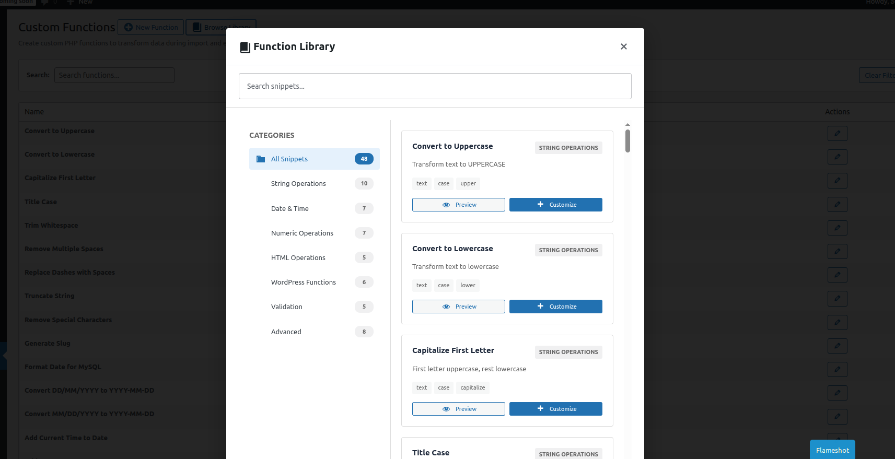

⚙️ Functions Library
Write, save, and reuse custom PHP transformation functions to modify field values during import, export, and bulk updates.
What Are Functions?
A Function is a small PHP snippet that receives a field value and returns a transformed version of it. You can assign functions to fields in the Import, Export, and Content Updater workflows.
For example, a function might:
- Convert a date from
DD/MM/YYYYtoYYYY-MM-DD - Strip all HTML tags from a field value
- Capitalise the first letter of every word in a title
- Multiply a price by a VAT rate
- Map a category name from a source system to a WordPress taxonomy term
Function Anatomy
Every function receives two arguments and must return the transformed value:
function transform( $value, $row ) {
// $value — the current field value
// $row — associative array of all fields in the current row
return strtolower( trim( $value ) );
}| Variable | Description |
|---|---|
$value |
The current value of the field this function is assigned to. |
$row |
An associative array containing all field values for the current row (useful when you need to build a value from multiple fields). |
| return | The function must return the final value. If nothing is returned, the original value is used. |
Managing Functions
Creating a New Function
Navigate to Import Export by RockStarLab → Functions and click Add New Function.

The function editor contains the following fields and controls:
| Field / Control | Description |
|---|---|
| Function Name | A descriptive label used to identify the function in dropdowns across import, export, and bulk update workflows (e.g., "Format Date to Y-m-d"). |
| Description | Optional notes about what the function does and when to use it. |
| AI Generator | Click this button to open the AI prompt panel. Describe the transformation you need in plain English and the AI will generate the PHP code for you automatically. |
| PHP Code | The built-in code editor where you write or paste the function body. Supports syntax highlighting. |
| Test Function | Enter a sample value in the Enter test value field and click Test to run the function against it. The result is shown instantly — no data is affected. |
| Save | Saves the function to the library. Once saved, it becomes available in all field mapping dropdowns immediately. |

Saving & Reusing
Once saved, the function appears in the field mapping dropdowns across all import, export, and bulk update operations. Functions are global — they can be used in any job.
AI Function Generator
Not comfortable writing PHP? Use the Generate with AI button to describe what you need in plain English and let the AI write the function for you.


Example prompts:
- "Convert a Unix timestamp to WordPress date format Y-m-d H:i:s"
- "Remove all HTML tags and decode HTML entities"
- "If the value is empty, return 'N/A'"
- "Convert European price format (1.234,56) to standard format (1234.56)"
Built-in Snippets Library
The plugin includes 50+ ready-to-use function snippets organised by category. Browse the Snippets tab on the Functions screen to find pre-built transformations you can use directly or customise.

Snippet Categories
- String — trim, uppercase, lowercase, slugify, truncate, replace, regex replace
- Date — parse and reformat dates in various formats
- Number — round, currency conversion, unit conversion
- HTML — strip tags, decode entities, wrap in elements
- WordPress — resolve post IDs, get term IDs, attach media by URL
- Validation — return default if empty, validate email, validate URL
- Advanced — add prefix, add suffix, conditional logic, multi-field composition
Security
Function code is executed in a sandboxed environment. A whitelist/blacklist system controls which
PHP functions and classes are permitted, preventing access to dangerous system calls such as
exec(), shell_exec(), system(), file system writes, and network
requests.